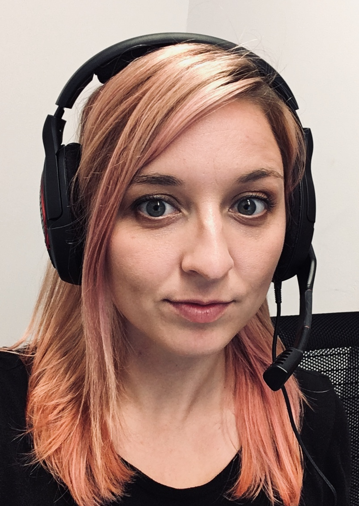
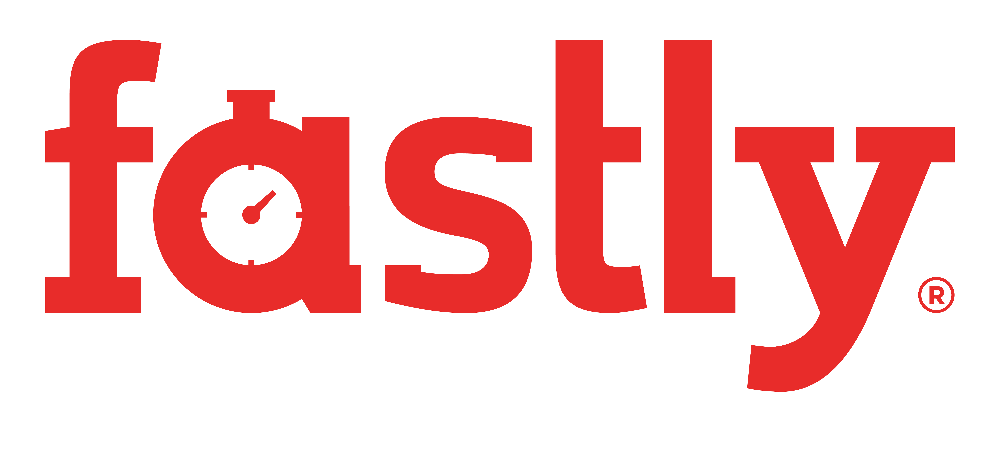
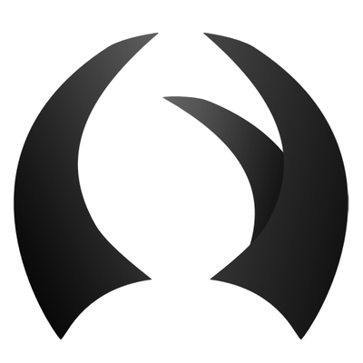
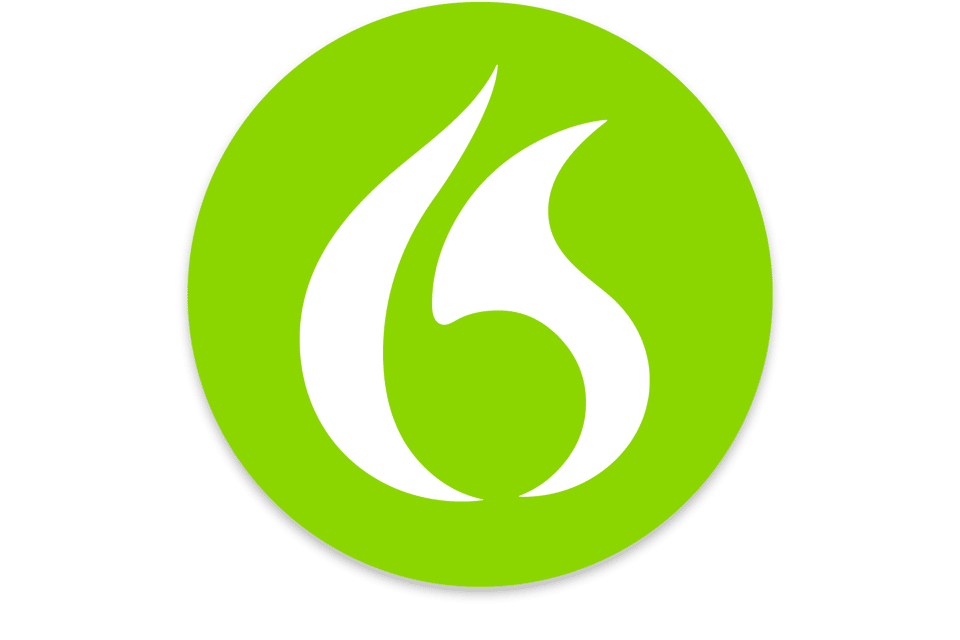
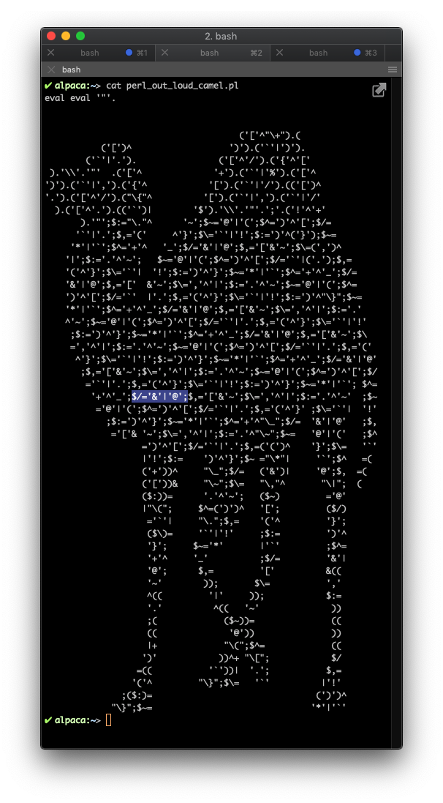
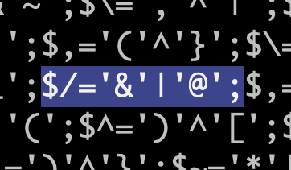
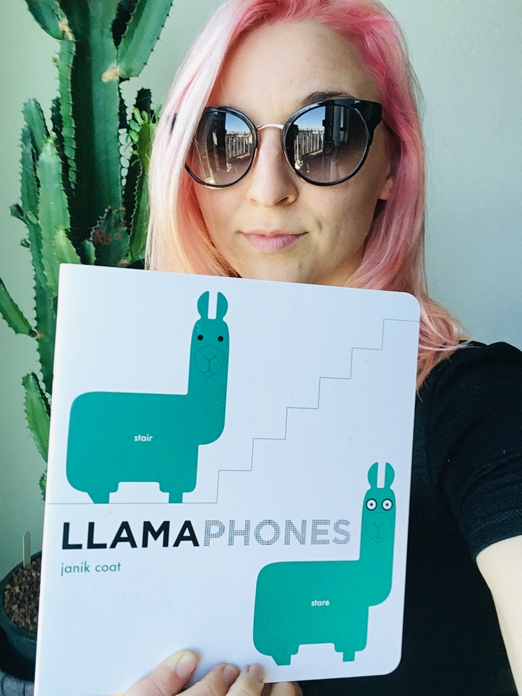
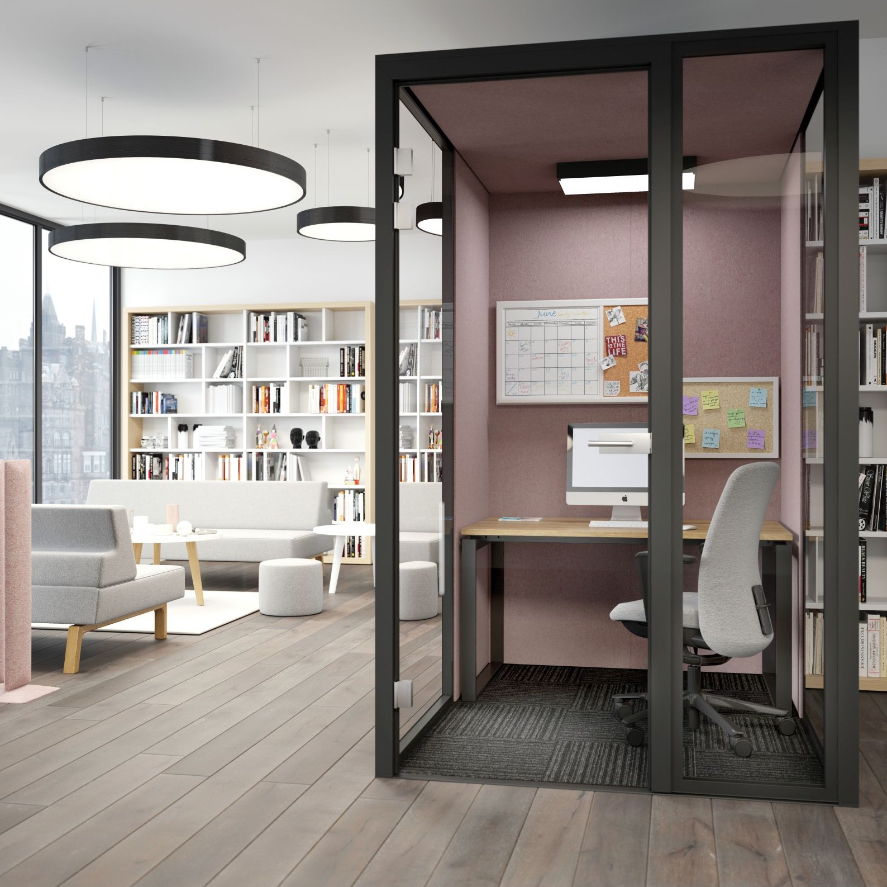

<!DOCTYPE html>
<html>

<head>
    <title>Perl Out Loud</title>
    <meta charset="utf-8">
    <link href="slides.css" rel="stylesheet" type="text/css">
</head>

<body>
    <script src="remark.min.js">
    </script>
    <script>
        var slideshow = remark.create({
            source: `


class: center, middle, pain, title

Perl Out Loud 🗣

---
class: pain
## whois emily
- GitHub: @2shea
- Twitter: @yomilly
- I write code for Fastly


---
class: ads


We help developers make fast, secure and reliable digital experiences happen by processing and serving customers' applications at the edge, as close to end-users as possible.

???
- We have built an edge cloud platform designed to be programmable and support agile software development.
- We have 60 points-of-presence around the world, as of March 31, 2019.
- i work on the platform for delivering core Edge Cloud configurations, and

---
class: pain, center, middle
I write Perl… by voice

---
class: center, middle, painvert
But... Why??

---
class: center, middle, pain
# RSI

(Repetitive Strain Injury)

👎👎👎

???
pain felt in muscles, nerves, and tendons caused by repetitive movement and overuse.

Started 2017
significantly impaired typing ability
Both hands
---
class: pain

## First I tried…
* Taking breaks
* Wrist braces at night
* Anti-inflammatories
* Occupational/Physical Therapy
* Massage

---
class: pain
## Then I tried…
* Acupuncture
* Chiropractor
* Pain creams
* Yoga/Stretching
* And More...

---
class: center, middle, pain, title
✨Ergonomics✨

???
Ergonomic review
Tape pens to my hands
Tape fingers together
Standing desk

---
class: pain
background-image: url(images/keyboards.png)


???
Split keyboard
mitosis keyboard
---
class: pain, center, middle


???
* New keyboards only got me so far
* Got frustrated feeling limited

While taking four aleve a day, using a very specialized keyboard, adding a left-hand mouse, maintaining a stretching schedule, i could type ~3 hours a day with no more than ~30-45 straight minutes of typing, but broken up with long breaks in between.

* Started looking at voice dictation

---
class: middle, center, painvert
Voice??

---
class: middle, discovery

I was expecting writing perl by voice to go something like this...

---
class: center, middle, black
<video width="100%" controls>
  <source src="videos/yt_vista_perl.mp4" type="video/mp4">
</video>
<div class="attribution">Source: <a href="https://youtu.be/MzJ0CytAsec">https://youtu.be/MzJ0CytAsec</a></div>

---
class: center, middle, discovery

But it actually works like...

---
class: center, middle, black
<video width="100%" controls>
  <source src="videos/I_can_do_better.mp4" type="video/mp4">
</video>

---
class: discovery

## The Tech

Microphone 🎤

Talon 

Dragon Dictation 

???
- for mac
- need decent microphone
---
class: discovery

## What Is Talon?
* Hands-free input
* Uses Dragon Dictation API
* Programmatically configured with Python
* Free!
* https://www.patreon.com/lunixbochs

???

* (voice/noise commands, eye tracking) 

This talk is not about Talon... it's an example of how Talon can be used. All 
the commands and tools you will see are built on top of Talon's API.
* Mention what dragon is
* Also has a built-in voice engine

---
class: center, middle, painvert

The ABC's

---

class: center, middle, discovery

---
class: middle, discovery
### NATO Phonetic Alphabet
<table>
  <tr><td> Alpha </td><td> Hotel </td><td> November </td><td> Uniform </td></tr>
  <tr><td> Bravo </td><td> India </td><td> Oscar </td><td> Victor </td></tr>
  <tr><td> Charlie </td><td> Juliett </td><td> Papa </td><td> Whiskey </td></tr>
  <tr><td> Delta </td><td> Kilo </td><td> Québec </td><td> X-ray </td></tr>
  <tr><td> Echo </td><td> Lima </td><td> Romeo </td><td> Yankee </td></tr>
  <tr><td> Foxtrot </td><td> Mike </td><td> Sierra </td><td> Zulu </td></tr>
  <tr><td> Golf </td><td></td><td> Tango </td></tr>
</table>

---
class: discovery

<span class="acc">A</span>ir
<span class="acc">B</span>at
<span class="acc">C</span>ap
<span class="acc">D</span>ip
<span class="acc">E</span>ach
<span class="acc">F</span>ine
<span class="acc">G</span>one
<span class="acc">H</span>arp
s<span class="acc">I</span>t
<span class="acc">J</span>ury
<span class="acc">K</span>runch
<span class="acc">L</span>ook
<span class="acc">M</span>ad
<span class="acc">N</span>ear
<span class="acc">O</span>dd
<span class="acc">P</span>it
<span class="acc">Q</span>uench
<span class="acc">R</span>ed
<span class="acc">S</span>un
<span class="acc">T</span>rap
<span class="acc">U</span>rge
<span class="acc">V</span>est
<span class="acc">W</span>hale
ple<span class="acc">X</span>
<span class="acc">Y</span>ank
<span class="acc">Z</span>ip

<textarea rows="4"></textarea>
???
Each letter of the alphabet is a word. The alphabet words are carefully chosen to have few syllables (for speed), and carefully chosen phonemes* (for accuracy).

---
class: mastery

## But what about all those symbols in perl?

<textarea rows="4"></textarea>

???
Actually, symbols are easy.

$/='&'|'@';
'+'^'_';$/='&'|'@';$,='[

---
class: mastery
## ✨YAY PERL✨



---
class: mastery

## Alphabet, basic keys, and keyboard shortcuts will get you far.

<textarea rows="4"></textarea>

???
* ship option crunch -> 
* option each 
* option pit -> π
* "command cap" -> cmd + C -> Copy
* "command pit" -> cmd + P -> Paste
tab
- command, option, shift or ship


For long or hard to remember combinations, I can configure commands in Talon

---
class: mastery

## Homophones
<textarea rows="4"></textarea>

???
## Same pronunciation, but different meaning, origin, or spelling

Demo some homophones
Chile,chilly,chili
bight,byte,bite
kernel,colonel
plaque,plack
command shift left (select word behind cursor)

---
class: center, middle, mastery, black

---
class: mastery

## Repetition
<textarea rows="4"></textarea>

???
- ordinals
- demo simple repetition

---
class: mastery
## Formatting
<textarea rows="4"></textarea>
???
HTTP::Response
XML::Simple
DateTime
Log::Log4perl
Plack::Middleware::SimpleLogger
Plack::Middleware::RearrangeHeaders
Plack::Recursive::ForwardRequest
File::Slurp
__DATA__
__INFO__
Perl::Critic::Exception::Configuration::Generic
Perl::Critic::Exception::Configuration::Option::Global
Cache-Control
If-None-Match
If-Modified-Since
Accept-Encoding

- kebab, snake, allcaps, pack

---
class: mastery
## Custom Vocabulary
<textarea rows="4"></textarea>

???
upsert
perltidy
githook
diag
undef
spotify
---
class: center, middle, black
<video width="100%" controls>
  <source src="videos/mojolicious_demo.mp4" type="video/mp4">
</video>

---
class: mastery
## Browser


---
class: center, middle, mastery, black
<video width="100%" controls>
  <source src="videos/git_demo.mp4" type="video/mp4">
</video>

???
- demo committing to git, push to github
---
class: painvert, center, middle, title

Challenges

---
class: pain, middle
## Learning Curve

it is steep 📈

<!-- substantial 🤔📚 -->

???
* exacerbated with injury
* different flow than typing
* shifts in team communication may help
  * async when possible
  * zoom

---
class: center, middle, pain
## Tools With Poor Accessibility

???
* most roadblocks are because of this
* lots of time working around
* lots of good talks on the topic
---
class: pain
## Voice Strain

guess what happens after talking to your computer for 8 hours a day?…

---
class: pain
## Open Office

everyone's favorite complaint

???
* two way noise problem
---
class: pain
## Stenomask


<div class="attribution">Source: <a href="https://talktech.com/stenomask-steno-sr/">https://talktech.com/stenomask-steno-sr/</a></div>
---
class: pain


## Acoustic <br/>Pods


<div class="attribution">Source: <a href="https://www.archiproducts.com/en/products/furniko/acoustic-multimedia-offic0-booth-focus-room_357574">https://www.archiproducts.com/en/products/furniko/acoustic-multimedia-office-booth-focus-room_357574</a></div>
???
---
class: center, middle, pain
## Remote Work, FTW!!


---
class: pain
## Not So Big Challenges

Supporting specific programming languages

???
- language optimizations are nice to have, quality of life improvements but not necessarily required
---
class: pain

## Voice Dictation Friendly Code
* Use abbreviations/acronyms thoughtfully
* Don't try to save vowels
  * \`backspace\` not \`bkspc\`
* shorter files are better

???
- use full words when you can (don't make it about english only)
- also benefits screen readers
---
class: painvert, middle, center
So... Why.

---
class: pain
## Take Aways
* Take care of your body!
* People are using speech to code in real life
* Remember non-keyboard users when building things :)
* The future may be more diverse than the keyboard/mouse model

???
- ask for ergo evaluations

---
class: painvert, center, middle
Thanks!
---
class: center, middle, pain
## BTW, Fastly is Hiring!
---
class: pain
## Links
* Talon: https://talonvoice.com/
* My Talon: https://github.com/2shea/talon_configs
* Talon Community: https://github.com/dwiel/talon_community
* Talon Patreon: https://www.patreon.com/lunixbochs

      `
        });
    </script>
</body>

</html>
